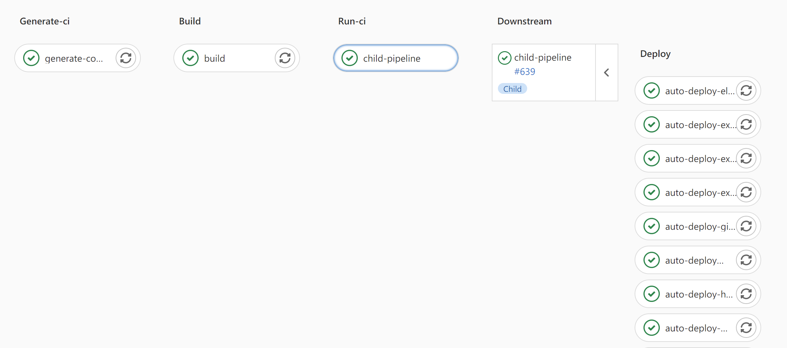

在pipeline的最佳实践中，不推荐使用动态pipeline。任何代码的可读性都是至关重要的，一旦开始使用动态pipeline就很难保证可读性，甚至无法保证可维护性。
虽然不推荐使用动态pipeline，但是在某些场景之下，使用动态pipeline会帮助我们在保证可读性不变甚至提高的情况下，同时提高了可维护性，这个时候我们推荐使用动态pipeline。
比如，我们需要在CI上对同一个项目跑100个测试，这一个测试唯一的区别就是传入参数不一样，这些参数会随着我们产品的演进而进行更新，比如如下一个片段重复100次，是不是会很痛苦？
1
2
3
4
5
| test-with-arg-100:
image: ubuntu
stage: test
script:
- auto/test 100
|
父子pipeline（Parent-child pipeline）
在Gitlab CI/CD 中，父子pipeline就是在一个pipeline中嵌套执行另外一个pipeline配置文件，即子pipeline。
子管道类型：
- 合并请求子pipeline（Merge request child pipelines）
- 动态子pipeline（Dynamic child pipelines）
- 嵌套子pipeline（Nested child pipelines）
更多内容可以参考官方文档
案例：使用动态子pipeline部署多个应用
在我的Homelab环境中，有一个Infrastructure的Kubernetes集群，集群中需要部署一系列的基础应用，比如：
- external dns用于注册ingress dns到DNS server上。
- Hashicorp Vault、Jenkins等实验应用
- Prometheus等监控应用
每一个应用都有一个对应的部署脚本，如下所示。
1
2
3
4
5
6
7
8
9
10
11
| ├── auto
│ ├── deploy-elasticsearch
│ ├── deploy-exdns-homelab-local
│ ├── deploy-grafana
│ ├── deploy-hashicorp-vault
│ ├── deploy-influxdb
│ ├── deploy-ingress
│ ├── deploy-jenkins
│ ├── deploy-prometheus
│ ├── deploy-sonarqube
│ └── deploy-vsphere-prometheus
|
上面的部署脚本，我都是使用 auto/deploy-* 这样的模式命名部署脚本的。这样根据部署脚本规律生成子pipeline的YAML配置文件，生成脚本如下。
1
2
3
4
5
6
7
8
9
10
11
12
13
14
15
16
17
18
19
20
21
22
23
24
25
26
27
28
29
30
31
| #!/bin/bash -eu
cd "$(dirname "$0")/.."
CI_CONFIG_FILE="child-ci.yml"
cat <<EOF > "${CI_CONFIG_FILE}"
image: $CI_REGISTRY_IMAGE
default:
retry: 2
variables:
KUBERNETES_SERVICE_ACCOUNT_OVERWRITE: k8s-infra-admin
stages:
- deploy
EOF
for script_name in auto/deploy-* ; do
cat <<EOF >> "${CI_CONFIG_FILE}"
${script_name//\//-}:
stage: deploy
script:
- ${script_name}
only:
- main
EOF
done
|
部分pipeline配置文件 .gitlab-ci.yml 如下：
1
2
3
4
5
6
7
8
9
10
11
12
13
14
15
16
17
18
19
20
21
22
23
| stages:
- generate-ci
- run-ci
default:
retry: 2
generate-config:
image: alpine:3.12
before_script:
- apk --no-cache add bash
stage: generate-ci
script: auto/generate-ci-config
artifacts:
paths:
- child-ci.yml
child-pipeline:
stage: run-ci
trigger:
strategy: depend
include:
- artifact: child-ci.yml
job: generate-config
|
pipeline执行图如下所示：
